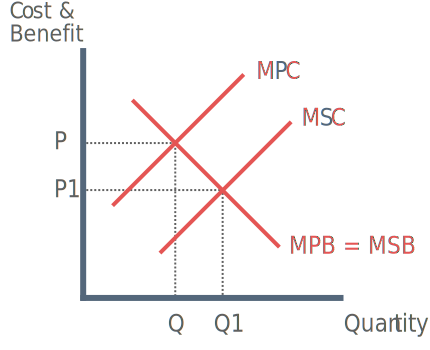

Sources of Market Failure
Positive Externalities
Negative Externalities
Imperfect Information
Public Goods / Quasi-public Goods
Monopoly
Immobility of factors of production
Inequality
Positive Externalities
There are two types of positive externalities. Externalities in
production and
consumption.
Positive externalities in production

The production of a merit good will have a positive spillover effect to third parties thus causing a positive externality to arise.
For example the production of catalysts in cars will reduce pollution, making cleaner air for society and increasing life expectancy.
Positive externalities in consumption
The consumption of a merit good by one consumer will have additional positive effects on the rest of society. For example if one person consumes a vaccination for an illness, then all those around that consumer will benefit as they are less likely to catch the illness.
Negative Externalities
There are two types of negative externalities. Externalities in
production and
consumption
Negative externalities in production
The production of a good may also have harmful effects to third party society. For example the production of an airport may cause both air pollution and aesthetic pollution.
Negative externalities in consumption
The consumption of demerit goods by one consumer may also have negative third party effect on society. For example the consumption of alcohol may have negative effects on society in the form of violent behaviour or drink driving.
Imperfect Information (merit goods / demerit goods)
Merit goods
Individuals may not act in their best interests as they have imperfect information of the benefits that can be derived.
Demerit goods
Demerit goods also suffer failure of information. Consumers are unaware of the long-term damage to their own health.
Public Goods
A good that posses the characteristics of non-excludability and non-rivalry in consumption is a public good.
1) Non-excludability: Those that do not pay can still enjoy the benefits of consumption for no financial cost.
2) Non-rivalry: Consumption of a public good by one person does not reduce the availability of a good to others.
Quasi-public Goods
A good that has some qualities of a public good but does not fully possess the two required characteristics of non-rivalry and non-excludability is considered a quasi-public good.
Example: National parks such as the Lake District
National parks are open to everyone and therefore appear non-excludable but it is possible to exclude some consumers by reducing right to access or charging for entry.